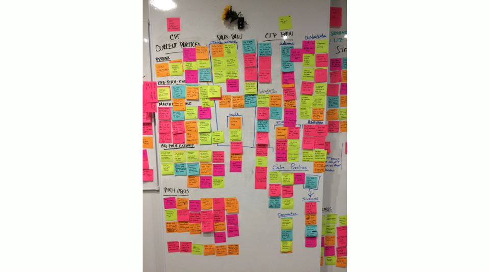

As part of the on-boarding process to IBM Design, the studio runs an incubator program. The incubator program takes some of the hardest problems in IBM and puts design as a focus to create a solution. The catch is, these are six week sprints. Together visual designers, ui/ux designers, design researchers and front end developers create blue sky solutions. The final pitch showcased a deliverable to business unit executives in product, engineering and sales.
The project brief focused around Presence Insights (PI).
During our PI sprint we dove deep into user research. Over the course of six-weeks we conducted a series of generative interviews. I believe that research is a key tool that brings teams together and creates alignment. This instance was no different. I worked along side my friend and colleague Adam Lehman. Together we wanted to make a visualization of our key insights of 8-10 hours of user interviews. How could we make it easy to consume and still be impactful?
We wanted to create an artifact that highlighted the journey of each user to understand intersection points.
The image below is the initial synthesis that my team and I did around our users.
From this image, I went through each user and began creating a journey. What would their process look like? What are they thinking? What are they saying? What are they doing?
By going through this exercise I was able to boil down complex information. I pushed to create stories for my team to use in the design process.
The biggest fear that I had was that this information was only going to make sense to myself. I wanted to make sure that any stakeholder could pick up my research. In a glance I wanted someone to understand who we were designing for and what were their pain points. I teamed up with Adam, the visual designer from my team to understand what might be the best way to map this out.
Both Adam and I are from big cities. He is from Detroit and I am from Chicago. Nostalgia would come upon us when we would think about our upbringings. We could never agree on which city had better food but we both have a love for public transportation. Public transport is interesting because at it’s core it is a complicated system. Hundreds of trains zipping across miles of metropolitan landscape, how do thousands of people make sense of it all?
Train maps. Train maps are a brilliant piece of design because they do a few different things really well. One, they are color coded. The association to color allows a user of said map to follow one specific line across a large area of land.
When looking at the maps above from Chicago and NYC, it does not matter whether you go forward or backward the start and finish section are always the same.
Two, they acknowledge and highlight the intersection points. A key component of a train map is transfers. You see where commonalities exist between different lines and where you could follow a different route.
Even in the case of a map from Tokyo, a foreigner can still make sense of the information. Brilliant.
If we applied these principles to our research artifact we would be able to create something powerful. Adam and I got to work. We spent about 4 hours stitching and weaving together the journeys of our users. It was an attempt to tell their stories and understand where did they all intersect.
Below is our final artifact deliverable.
The original intention for this artifact was to take a large data set and make it digestible. By synthesizing the information into a series of journeys it allowed the collective PI team to build empathy for the users.
Used in the initial production of PI as a baseline for insights the map got updated as the project pushed forward.